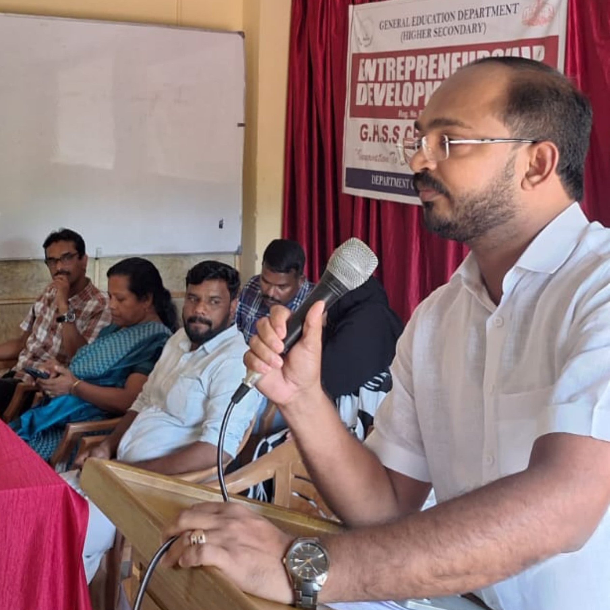

We are excited to announce the launch of the Entrepreneurship Development Club at GVHSS Chettiyanknar! This is the first time our school is establishing such a club, aimed at igniting and fostering entrepreneurial spirit among students. The club will serve as a platform for students to explore the fundamentals of entrepreneurship, develop critical skills like leadership, problem-solving, and creativity, and learn the importance of innovation in today's world. Through various activities, workshops, and mentorship sessions, the Entrepreneurship Development Club will empower students to transform ideas into actionable projects and even real-world ventures. Join us for the inauguration ceremony on November 6th to celebrate this milestone and to begin an inspiring journey of learning, growth, and enterprise!
We are thrilled to announce that Jafer, the CEO of Ponkas Food Products, will be inaugurating the Entrepreneurship Development Club at GVHSS Chettiyanknar on November 6th! His presence will bring valuable insights and inspiration to our students as they embark on this new journey in entrepreneurship. Jafer's achievements with Ponkas Food Products, a successful brand in the food industry, demonstrate the power of vision, dedication, and innovation—qualities that our club aims to instill in its members. Join us to hear from Jafer as he shares his entrepreneurial journey, motivating our students to pursue their dreams and make an impact in their own unique ways.